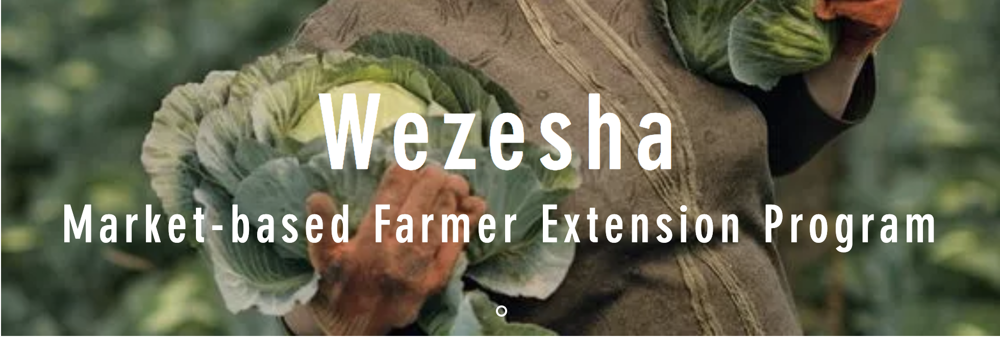
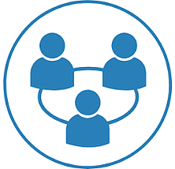

<section>
  <div>
    <p class="text1">
      Wezesha (enable) is our market-based farmer training and extension
      program. Africa Turnaround has designed an innovative and sustainable
      extension model that has 3 key components: 1) Key services, 2) Training
      model, 3) Sustainable model. If you are interested in piloting this model
      with us, kindly contact us.
    </p>

    
    <h4 class="services-header">Key Services</h4>
    <div>
      <div class="services-header1">
        <p>1. Organizing farmers</p>

        <div style="margin-left: 2vw;">
          Profiling of farmer groups: Develop a profile for selecting
          smallholder farmer groups. Mobilization channels: Work with our youth
          wezesha agents to reach small holder farmers in groups.
          Accountability: Encourage farmer groups to develop self-coordination
          and accountability.
        </div>
      </div>

      <div class="services-header2">
        <p>2. Training and extensions</p>

        <div style="margin-left: 2vw;">
          Agricultural training: We conduct training on production, harvesting
          and post-harvest management, aggregation and marketing. Farming as a
          Business and financial literacy skills training.
        </div>
      </div>
      <div class="services-header3">
        <p>3. Aggregation and marketing</p>

        <div style="margin-left: 2vw;">
          We offer assistance in aggregation and market linkages in cooperation
          with the farmer organization.
        </div>
      </div>
    </div>

    <div class="whole">
      
      <h4 class="services-header">Training Model</h4>
      <div>
        <div class="services-header1">
          <p>1. Training structure:

            </p>

          <div style="margin-left: 2vw;">
            Our standard training program (agronomic, business, financial
            literacy) is a 50 hour (6 days) training covering theory and
            practical with theory taking 31.5 (3.7 days) and practical taking
            18.5 (2.3 days). The training can be blocked or staggered depending
            on what suits participants and program objectives
          </div>
        </div>

        <div class="services-header2">
          <p>2. Training cohorts:</p>

          <div style="margin-left: 2vw;">
            To optimize effectiveness of training in transferring of practical
            skills, the farmers are trained in small cohorts of 25 participants.
            Every three training cohorts are then organized into larger groups
            of 75 dubbed clusters. Each cluster (of 75) is managed by our
            Wezesha agent (Twalisha trainer and extension officer).
          </div>
        </div>
        <div class="services-header3">
          <p>3. Training sequence and approach:</p>

          <div style="margin-left: 2vw;">
            Theory training will be covered in 3.7 days. The training makes use
            of samples and pictures to illustrate certain concepts such as
            identifying crop pests and diseases. Commencing the training with
            farming as business topics is aimed at inspiring the farmers to view
            and approach their farming venture as a business and equip them with
            skills essential for managing their farming enterprises. Marketing
            also comes early in order to allow farmers to consider their
            marketing options, value of bulking and shopping for bulk buyers. A
            simple business and marketing plan template is availed to
            participants to allow them plan their farming enterprises. The rest
            of the training is built on this foundation of farming as business.
            The training then goes on to discuss how to prepare for production
            including seed sourcing and land preparation.
          </div>
        </div>
      </div>
    </div>
    
    <h4 class="services-header">Sustainable Model</h4>
    <div>
      <div class="services-header1">
        <p>1. Low cost quality trainers:

          </p>

        <div style="margin-left: 2vw;">
          We deploy youth trained workers dubbed Wezesha agents who are trained
          and supplied with a training and extension kit (Wezesha Kit). To
          guarantee quality, the Wezesha agents work under the supervision and
          with the technical support of a Chief Agronomist with over 7 years of
          experience in farmer training and extension work.
        </div>
      </div>

      <div class="services-header2" style="padding-bottom: 17vw;">
        <p>2. Cost shared model:

          </p>

        <div style="margin-left: 2vw;">
          Our training and extension program always seeks to realize a leverage
          model of implementation where cost is shared between government
          extension programs, input manufacturers' outreach programs, and NGO
          farmer support programs. Where applicable the model is also input
          linked where the Wezesha agents (local trainers and extension workers)
          work as input promoters and distributors and earn a margin. Where
          agreeable with the farmer organization, the farmers also share in the
          cost by committing in advance a small fee paid in the form of a
          harvest share. The farmer organization sells the committed harvest
          share and passes the proceeds on to the Wezesha agent as a bonus, at
          the end of the harvest period.
        </div>
      </div>
      <div class="services-header3">
        <p>3. Performance based:

          </p>

        <div style="margin-left: 2vw;"  >
          Linking Wezesha agents’ end of season bonus to harvest results ensures
          that the agents work hard to realize optimal harvest for each of their
          farmers.
        </div>
      </div>
      <div class="services-header3">
        <p>4. Transportation:

          </p>

        <div style="margin-left: 2vw;">
          Transportation of trainers is a major cost in provision of extension
          services. To keep the cost of field logistics low, boda bodas (hired
          motor bikes) are used and are charged on per trip basis. Preparing and
          organizing the training is undertaken by a senior Wezesha agent (a
          Junior Agronomist) at no extra cost.
        </div>
      </div>
      <div class="services-header3">
        <p>5. Training logistics:

          </p>

        <div style="margin-left: 2vw;">
          To keep the cost of venue and necessary refreshments low, the training
          is hosted in a most suitable home of one of the 25 farmers in a
          training cohort. Given plenty of food in the rural setting, the
          participants are also encouraged to arrange for refreshments. With the
          demo farms hosted by one of the cohort members, this arrangement would
          also work for practical trainings.
        </div>
      </div>
      <div class="services-header3">
        <p>6. Small Demo Plots:

          </p>

        <div style="margin-left: 2vw;">
          We recommend quarter an acre which allows enough room to conduct
          practical sessions with our recommend group of 25. Small demo plots
          allow coverage of the practical sessions within a short duration of
          time. The shorter the sessions the less it costs.
        </div>
      </div>
      <div class="services-header3">
        <p>7. Community videos and mobile projectors:

          </p>

        <div style="margin-left: 2vw;">
          To drive costs even lower, we are working to build a model where
          community videos in local languages are used to reach out to bigger
          numbers more efficiently without compromising quality.
        </div>
      </div>
      <div class="services-header3">
        <p>8. Market linkage:

          </p>

        <div style="margin-left: 2vw;">
          Our market linkage services to farmer organizations through our sister
          company, Twalisha Limited, guarantee markets to the farmers.
        </div>
      </div>
      <div class="services-header3">
        <p>9. Close monitoring and Partner updates:

          </p>

        <div style="margin-left: 2vw;">
          We provide periodic updates and analytical reports to program
          partners. Close monitoring of each step ensures that corrective
          measures are taken in good time in order to a guarantee results.
        </div>
      </div>
    </div>
  </div>
</section>
